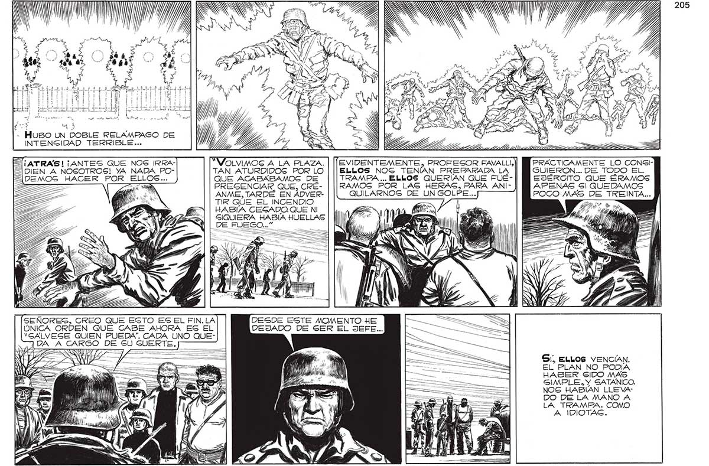

NdNKNN QÁE . E N des oa 3 % í ta Huso UN DOBLE RELAMPAGO DE INTENGIDAD TERRIBLE... S | z ES ¡ATRAS! ¡ANTES QUE NOS IRRA4ÍDIEN A NOGOTROS! YA NADA PO“VOLVIMOG A LA PLAZA. AÁDEMOS HACER POR ELLOS... EVIDENTEMENTE, PROFESOR FAVALLI,)]| Y PRACTICAMENTE LO CONGITAN ATURDIDOG POR LO | ||ELLOS NOS TENÍAN PREPARADA LA GUIERON... DE TODO EL QUE ACABABAMOS DE TRAMPA ... ELLOS QUERIAN QUE FUE- EJÉRCITO QUE ÉRAMOS O PRESENCIAR QUE, CRÉ- | ||¡RAMOS POR_LAS HERAS, PARA ANI- APENAS 5 QUEDAMOS da ANME, TARDE EN AÁDVER- QUILARNOG DE UN GOLPE... POCO MAS DE TREINTA... : TIR QUE EL INCENDIO HABÍA CEGADO.QUE NI SE bg GIQUIERA HABÍA HUELLAS DE FUEGO...” A . SEÑORES, OREO QUE ESTO ES EL Fl, LA DESDE ESTE MOMENTO HE ÚNICA ORDEN QUE CABE AHORA EG EL DEJADO: DE SER El JEFE... “GALVEGE QUIEN PUEDA”. CADA UNO QUES”, ELLOS VENCÍAN. EL PLAN NO PODÍA HABER SIDO MAS SIMPLE, Y SATANICO. NOS HABIAN LLEVA: DO DE LA MANO A LA TRAMPA. COMO A, IDIOTAG. MONOS ARAN Y) Al % M0 id ! e) IN Ñ
